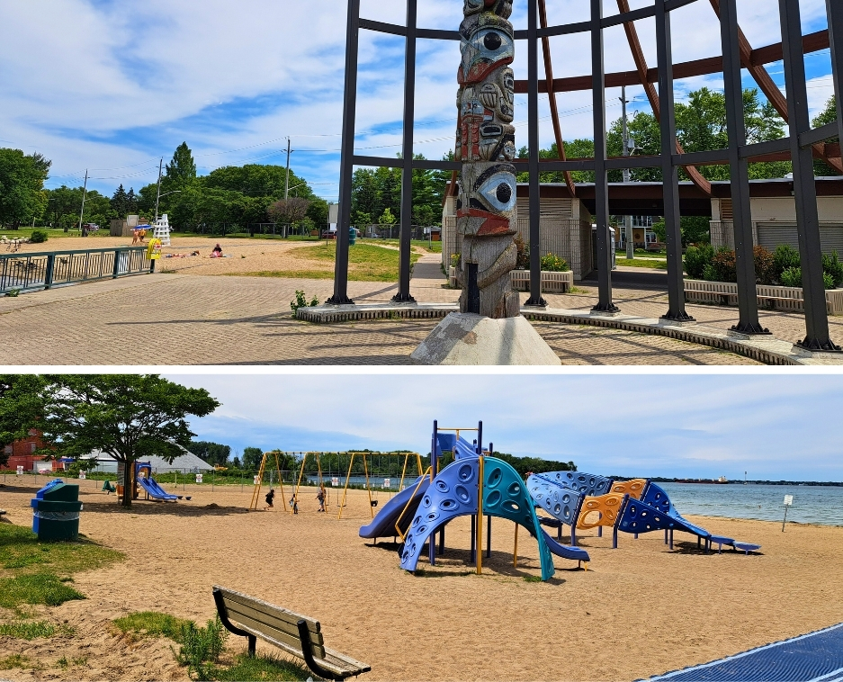
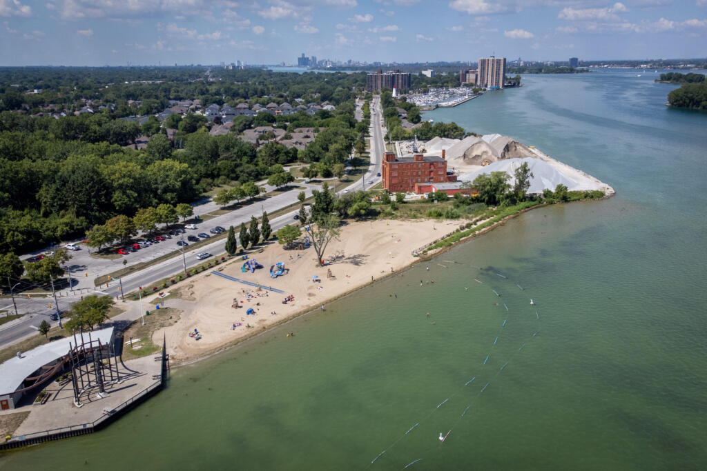

Sandpoint Beach Park
Address: 10300 Riverside Dr. E., Windsor, ON
sourced from City of Windsor
sourced from Windsorite
For many years, Sandpoint Beach was Windsor's premier summer destination, offering a refreshing escape from the city's heat as the city's only supervised public beach. It provided a safe and enjoyable environment for swimming and sunbathing along the scenic shores of Lake St. Clair, with its long, sandy beach being perfect for family fun. However, visitors need to be aware that in a recent decision, the City Council has voted to close the beach. While it remains a vibrant hub in the community's memory, its future as a recreational outlet has changed, and it will no longer operate as an accessible public beach